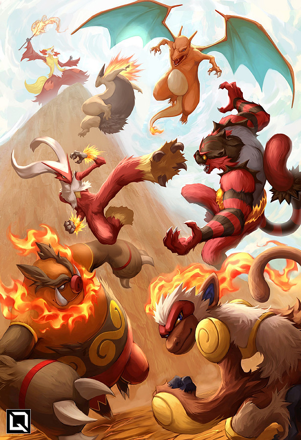
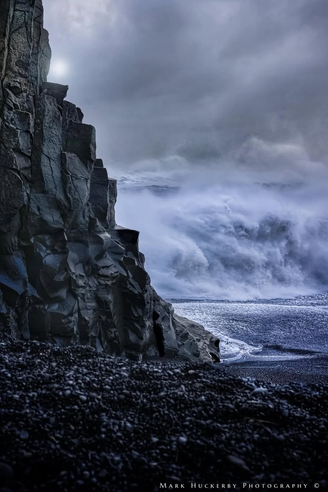

Video Game & Film Music
I believe in storytelling through sound. My primary goal is to write music that serves the narrative and emotional arc.
In particular, I'm drawn to animation, though I also work across other genres and formats.
Film & Animation
Re-scores and original scores for animation and commercial work.
Coffee Run (2020)
Elephants Dream (2006)
Harpwell & Sons by CueTube (2025)
Video Game Soundtracks
Original cues written for battle, exploration and world-building.

Now! Strike with Flame!
